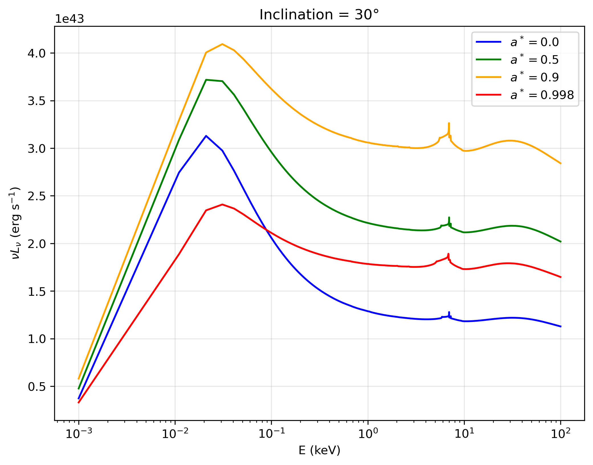
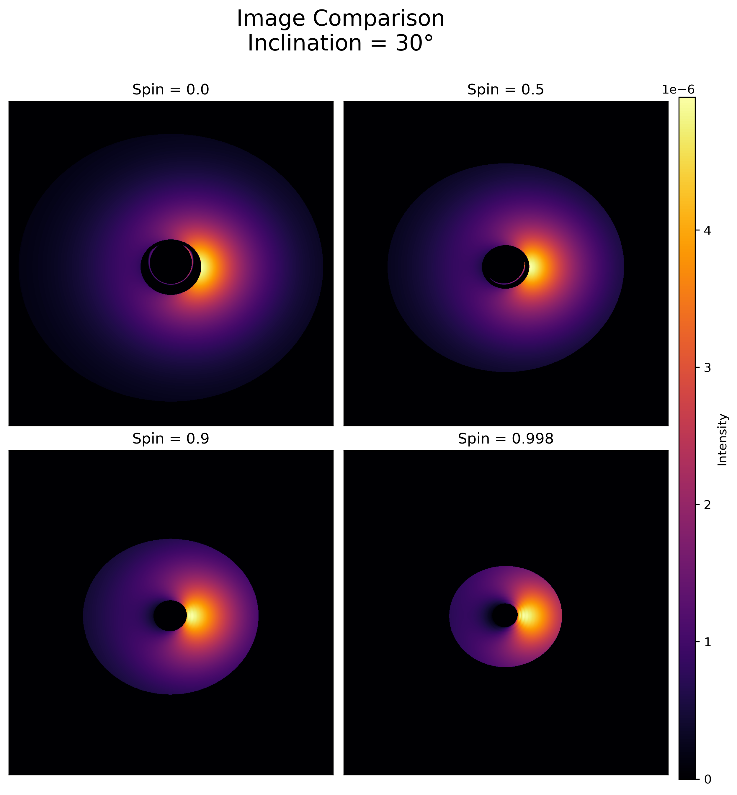
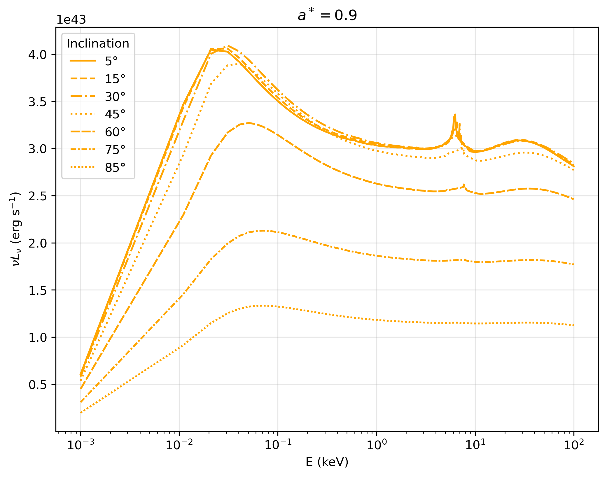
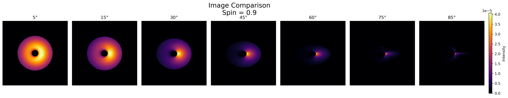

Undergraduate Student, Department of Applied Optics & Photonics, University of Calcutta
Research Intern, Galaxies, Étoiles et Cosmologie (GECO), Laboratoire d'Astrophysique de Marseille and Departamento de Física, Universidad de Santiago de Chile
Former Research Intern, Nicolaus Copernicus Astronomical Center of the Polish Academy of Sciences (CAMK PAN)
About Me
Peering into the hearts of distant galaxies
Hi, I'm Koushiki Bhattacharyya! I'm an undergraduate student pursuing a Bachelor's degree in Optics & Optoelectronics Engineering at the Department of Applied Optics & Photonics, University of Calcutta, in Kolkata, India. My interests lie in black holes and active galactic nuclei (AGN), in particular AGN feedback, galaxy evolution, X-ray emission, and relativistic effects near black holes.
I'm currently a remote research intern at Universidad de Santiago de Chile, where I use MUSE observations to study AGN feedback in galaxy clusters under Prof. Valeria Olivares. I'm also a remote research intern in the GECO group at the Laboratoire d'Astrophysique de Marseille, where I work on observational studies of X-ray emission of AGNs under Dr. Delphine Porquet. Before that, I was a summer research intern at CAMK PAN in Poland, where, under Mr. Parikshit Partha Biswas, I studied the relativistic broadening of Fe Kα emission from AGNs using the general relativistic ray-tracing code GYOTO. You can read about all of these in the Research section.
I'm a recipient of the Jagadish Bose National Science Talent Search Scholarship, and I placed first in an inter-college astronomy quiz competition at the University of Calcutta in 2025. I work mainly in Python and C/C++, and I've also used MATLAB and Zemax. I speak English, Bengali and Hindi.
Research
I'm interested in supermassive black holes and the active galactic nuclei they power. Close to the event horizon, gas spiralling through a disc lit by a hot corona produces X-rays that are bent and shifted by the black hole's gravity before reaching us, carrying a record of the accretion geometry that is genuinely hard to read back out, since different physical pictures can produce spectra that look much alike. Zooming out, that same accretion couples back to the host galaxy: winds and jets can inflate cavities in the surrounding gas and regulate star formation, while processes like galaxy mergers can drive gas inward, trigger AGN activity, and reshape the evolution of the galaxy itself.
My work so far has approached this from both directions — ray-tracing of the inner accretion region, X-ray spectroscopy of AGN emissions, and integral-field mapping of feedback in cluster cores.
Here are the projects I've worked on so far:
Observational X-ray Emission of AGN
Research internship, GECO group, Laboratoire d'Astrophysique de Marseille (remote). [Sept 2026 – present]
I'm working with Dr. Delphine Porquet on the observational X-ray emission of active galactic nuclei. The project is in its early stages, and we are still defining its direction.
AGN Feedback in Galaxy Clusters with MUSE
Research internship, Departamento de Física, Universidad de Santiago de Chile (remote). [Aug 2026 – present]
I'm working with Prof. Valeria Olivares on AGN feedback in galaxy clusters. Jets from the active nucleus at the centre of a cluster can inflate cavities in the hot gas around it, and this feedback is thought to influence how that gas cools and forms cold filaments. My project uses observations from the MUSE integral-field spectrograph to study the warm gas in cluster cores. I've just started, and I'll add more as the work develops.
Relativistic Broadening of AGN Emission with GYOTO
Summer research internship, Nicolaus Copernicus Astronomical Center of the Polish Academy of Sciences (CAMK PAN), Poland (remote). [June – Aug 2026]
Working with Mr. Parikshit Partha Biswas, I used the general relativistic ray-tracing code GYOTO to simulate the X-ray emission of active galactic nuclei in Kerr spacetime. I took radiative transfer outputs from the TITAN photoionization code and used them as inputs to model relativistically broadened Fe Kα emission.
I ran large-scale GYOTO simulations on a Linux-based high-performance computing cluster using SLURM. With Python, I analysed how the black hole spin, the observer's inclination and higher-order photon trajectories change the simulated spectra and images.

Simulated spectra at 30° inclination for spins 0.0–0.998, showing how spin affects the Fe Kα line and overall spectral shape.

Simulated disc images at 30° inclination for spins 0.0, 0.5, 0.9, and 0.998, showing the shrinking inner shadow with increasing spin.

Simulated AGN spectra for spin a* = 0.9 at inclinations from 5° to 85°. Flux and Fe Kα prominence drop as inclination increases.

Simulated disc images for spin a* = 0.9 across inclinations 5°–85°, showing increasing foreshortening and beaming toward higher inclination.
Outreach
I'm serving as the Secretary of the University of Calcutta student chapter of SPIE, the international society for optics and photonics, a role I've held since April 2026. I help plan outreach programmes, seminars and other chapter activities. Since May 2026, I've volunteered with the University of Calcutta student chapter of the Optical Society of India (OSI). In August 2025, I was a student demonstrator in the Jigyasa Programme, a CSIR-KVS student-scientist connect initiative, where I explained and demonstrated scientific and optical models to school students.
CV
My CV lists my education, research experience, skills and activities.
I'm always happy to talk about black holes, AGNs, optics and research. Feel free to get in touch. Questions, ideas or collaborations are always welcome.